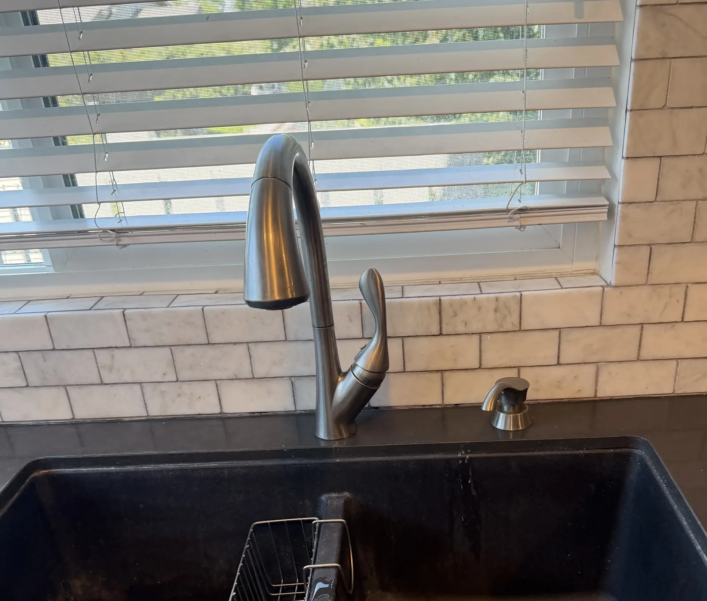

Bathroom faucet
$120
Replace at an existing vanity sink
- Remove the existing faucet
- Install your new faucet
- Install new standard supply lines
- Run water and check for leaks
Replace a worn, leaking or dated bathroom or kitchen faucet at its existing sink location. You choose the faucet; Dustin installs it cleanly and checks the connections for leaks.
Customer-supplied faucet and existing compatible connections. New standard supply lines are included.

The right fixture can improve daily use and refresh the sink without changing the surrounding counter or plumbing layout.
Remove the existing faucet, install the customer-supplied replacement, connect new supply lines and test for leaks.

A clean update for a vanity sink when the new faucet matches the existing hole pattern and connections.
These prices apply to a customer-supplied faucet at an existing compatible sink location. Any additional work is identified before it begins.
Faucet is supplied by the customer. Pricing assumes accessible, serviceable shutoff valves and compatible existing plumbing. Corroded parts, unusual access or other repairs may change the scope; any change is discussed first.
If the faucet project also needs one of these items, Dustin can confirm the added scope and estimate before work starts.
$40 when installed with the faucet and compatible with the existing sink and drain connection.
$90 for a standard replacement at an accessible, compatible kitchen sink connection.
$115 when a serviceable replacement is appropriate and the visible connections are accessible.
Send the sink, existing faucet, plumbing below and the new faucet model.
Dustin reviews the visible hole pattern, access and connections.
You know the planned scope before the appointment is scheduled.
The old faucet is removed, the replacement is installed and connections are checked.
This page is for swapping a faucet at an existing bathroom or kitchen sink. Keeping the scope clear makes the estimate more useful and avoids surprises.
These clients specifically mention faucet installation or Dustin’s responsiveness and workmanship.
“Dustin Swad of Ultra Home Repair replaced 5 faucets for me, changed out a thermostat, and flushed our tankless water heater. He did a great job, was professional, gave me a great price, and I will definitely hire him again in the future!”
“Dustin was extremely responsive to my messages and questions. He was able to finish installing a faucet, complete my painting, replace the bathroom fans and also swap out door knobs in good time. I appreciated his before/after pictures and his prompt responses to my questions.”
“Changed out old kitchen faucet for new one in record time and with his usual precision, cleanliness, courtesy and on-time arrival. If you want a reliable and trustworthy, ‘ultra’ capable handy person - look no further.”
A customer-supplied bathroom faucet is $120 to replace, and a customer-supplied kitchen faucet is $150 to replace, at an existing compatible location. New standard supply lines are included.
Yes. Send a photo of the sink and the faucet you are considering before ordering so Dustin can review the visible hole pattern, clearance and basic fit.
Yes. New standard supply lines are included in the listed bathroom and kitchen faucet replacement prices.
Yes, when replacing the faucet at the existing compatible sink connection addresses the problem. Hidden pipe leaks, new plumbing routes and larger plumbing repairs are outside this service.
Yes. Text photos and the faucet models for each location so the full scope can be confirmed together.
Primary areas are Irvine, Newport Beach, Newport Coast, Corona del Mar and Laguna Beach. Also serving Lake Forest, Mission Viejo, Aliso Viejo, Laguna Niguel, Dana Point and surrounding areas.
Text photos of the sink, plumbing below and the faucet you want installed.